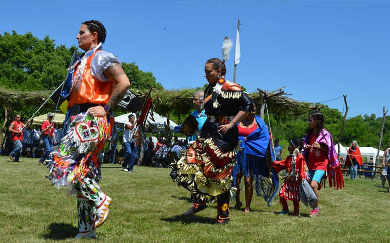

Saturday, March 11, 2023 | 10:30 a.m. - 12:00 p.m.
The first presentation in the AIA/StarWatch Winter 2021 Lecture Series presented by Dr. Melanie Hubbard, Associate Professor of Anthropology at Wright State University.
The Middle Woodland Period (200 BCE - 700 CE) in the Midwestern United States is best known for the Hopewell. However, west-central Indiana does not fit that definition well. Surrounded by Hopewell culture, yet perhaps not fully of it, the Northwood site of west-central Indiana was the focus of Indiana University's archaeological field school. Survey and excavation have revealed a village surrounding a plaza. The plant remains from the site give clues to the lifeways of this little-understood area. Food choices are constrained by the environment and at the same time, strongly shaped by culture. The plants used by the inhabitants of the Northwoods site were a mixture of wild and domesticated. Few of these plants are widely used today, and several types represent the “lost crops” of the Eastern Agricultural Complex.
Thanks to the Archaeological Institute of America and the generosity of an anonymous donor, admission to the 2023 Lecture Series is free and open to the public. Regular admission fees apply for guests who wish to visit the museum and village during the regular business hours. Seating is available on a first- come, first-served basis. Refreshments: Pastries will be provided; guests are welcome to bring a beverage.
Saturday, April 1, 2023 | 10:30 a.m. - 12:00 p.m.
The second presentation in the AIA/StarWatch Winter 2023 Lecture Series presented by Dr. Martha Hoffman, Lecturer in Earth and Environmental Systems at Indiana University.
The Middle Woodland Period (200 BCE - 700 CE) in the Midwestern United States is best known for the Hopewell. However, west-central Indiana does not fit that definition well. Surrounded by Hopewell culture, yet perhaps not fully of it, the Northwood site of west-central Indiana was the focus of Indiana University's archaeological field school. Survey and excavation have revealed a village surrounding a plaza. The plant remains from the site give clues to the lifeways of this little-understood area. Food choices are constrained by the environment and at the same time, strongly shaped by culture. The plants used by the inhabitants of the Northwoods site were a mixture of wild and domesticated. Few of these plants are widely used today, and several types represent the “lost crops” of the Eastern Agricultural Complex.
Thanks to the Archaeological Institute of America and the generosity of an anonymous donor, admission to the 2023 Lecture Series is free and open to the public. Regular admission fees apply for guests who wish to visit the museum and village during the regular business hours. Seating is available on a first- come, first-served basis. Refreshments: Pastries will be provided; guests are welcome to bring a beverage.
To view hours of operation, click here To view the history of White Indian Village, click here